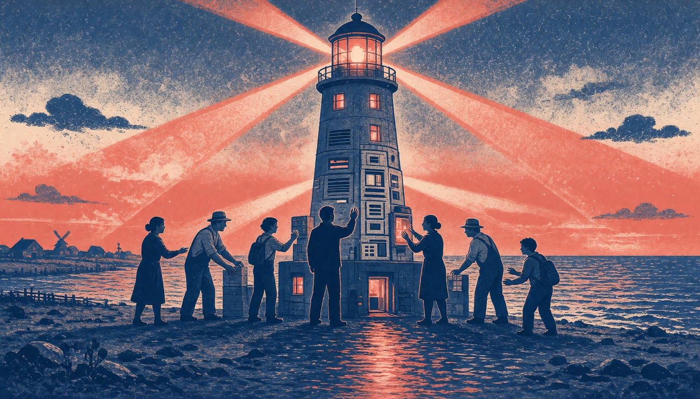

Netcompany invests DKK 325 million to co-own Denmark's AI centre and Gefion
The state fund EIFO puts in DKK 150 million and the Novo Nordisk Foundation will hold the largest share at 52.6 percent, as ministers say pooling public and private money keeps the technology in Danish hands.

The Danish IT firm Netcompany has become a co-owner of the Danish Centre for AI Innovation (DCAI) in a DKK 500 million investment, about €67 million. Netcompany is putting in DKK 325 million; the state fund EIFO provides DKK 150 million. Once the deal closes, the Novo Nordisk Foundation will hold 52.6 percent, with EIFO and Netcompany at 23.7 percent each.
With the new capital, DCAI says its ambition is to develop its supercomputer Gefion into a scalable, secure and commercially viable national AI platform. The platform would serve the Danish public sector, critical industries and research and educational institutions. The government has set aside DKK 150 million for EIFO in its finance bill proposal to strengthen public engagement. Netcompany chief executive André Rogaczewski will join DCAI's four-member board when the deal completes, as part of the firm's governance and minority protection rights.
Gefion was launched in 2024 with 1,528 Nvidia chips, and DCAI says the machine is now nearing full capacity. DCAI chairperson Nana Bule said that is why the timing is right for new capital and competencies. With the move, she added, DCAI is evolving as a strong, sovereign Danish platform.
Netcompany subscribed for new DCAI shares on a pre-money valuation of DKK 875 million. DCAI will use the proceeds to invest in more AI compute capacity and related technology, and to build up its organisation and operations. DCAI says the investment is meant to meet growing demand in Denmark for secure, sovereign AI capacity.
Martin Lidegaard, Denmark's minister for business and competitiveness, said it keeps ownership of the technology of the future from being left to others. Christina Egelund, the research minister, called it fantastic news that public and private forces are pooling resources. "Denmark must be among the countries shaping the direction of tomorrow's technology," Lidegaard said.